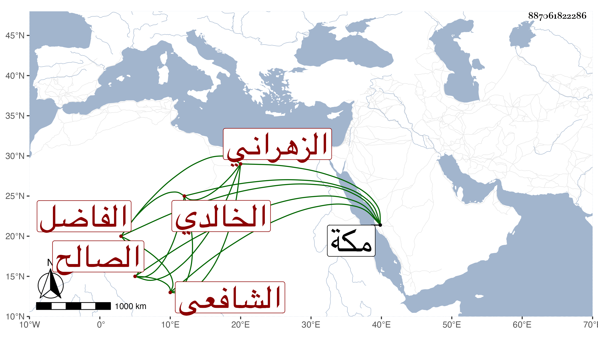

0902Sakhawi.DawLamic.ITO20230111-ara1.EIS1600.887061822286
Biography ID: 887061822286
787
موسى بن عيسى بن يوسف بن مفلح بن مسعود بن عبد الحميد بن ابن محمد الشرف أبو محمد الزهراني الخالدي نسبة للعرب الذين يقال لهم بنو خالد وبعض الناس يقول أنه قرشي مخزومي الخلفي الشافعي الفاضل الصالح ويعرف بصاحب الخلف بضم المعجمة . سمع من أبيه وأجاز له في جملة إخوته في سنة اثنتين وستين وسبعمائة على بن عيسى بن موسى بن غانم المصري ومحمد بن سالم بن إبرهيم المقرئ المكي وعائشة ابنة عبد الله بن المحب الطبري وفاطمة ابنة أحمد بن عطية بن ظهيرة وتفقه بأبيه وغيره واشتهر بالزهد والورع والكرامات وكانت له عناية بتربية المريدين وإرشاد الجاهلين والصبر على الإنفاق والأمر بالمعروف والنهي عن المنكر يطيل الصلاة بالجماعة ويقرأ فيها القرآن على التوالي حتى يختمه في الصلوات تارة جزءا وتارة بعضه على طريقة تشبه طريقة السلف . ذكره التقي ابن فهد في معجمه وخرج له من مروياته تحفة الوارد وبغية الزاهد وفرغه في ربيع الثاني سنة خمس وعشرين ، وذكره الفاسي في ذيل سير النبلاء فقال : عني بالفقه وغيره وله معرفة وحظ جيد من العبادة والخير وفيه إحسان للواردين إليه وحصل كتبا كثيرة وللناس فيه اعتقاد كبير ، وحج مرات آخرها في سنة اثنتي عشرة وبلغني أنه أخذ بمكة عن قاضيها أبي الفضل النويري رواية عن قاضيها الجمال بن ظهيرة في الحاوي ومع والده فيما بلغني عن العفيف اليافعي قال وأظن نسبته للعرب الذين يقال لهم بنو خلد سكان الرياضة ونواحيها . مات في ليلة السبت ثاني عشرى ربيع الآخر سنة تسع وعشرين ببلده الخلف والخليف ، زاد غيره عن نيف وتسعين سنة وحزن الناس عليه وقبره يزار وبنيت عليه قبة رحمه الله . قال الفاسي ورثاه بعض أصحابنا بأبيات أولها :
| قد أظلم الجو بعد الضوء والسدف | بموت موسى بن عيسى صاحب الخلف |
